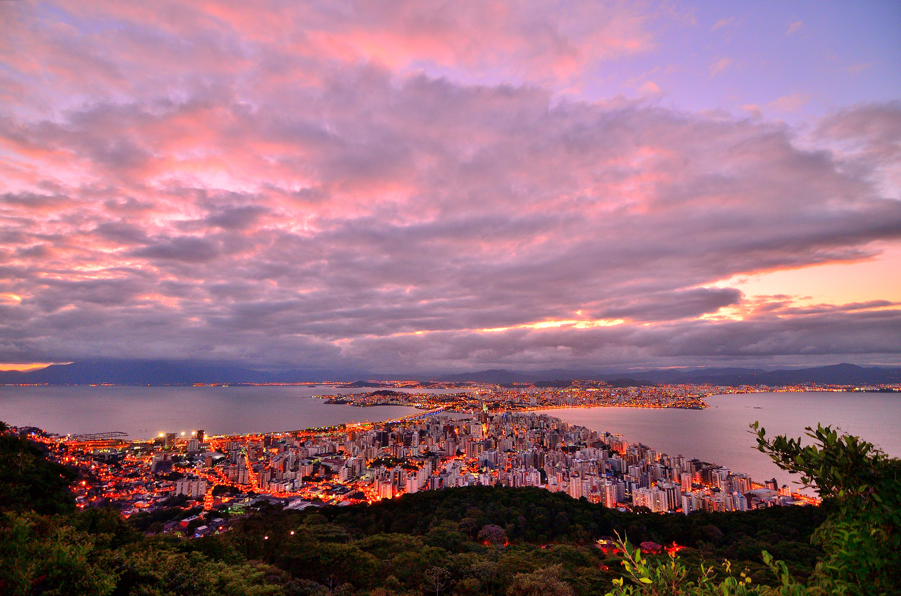
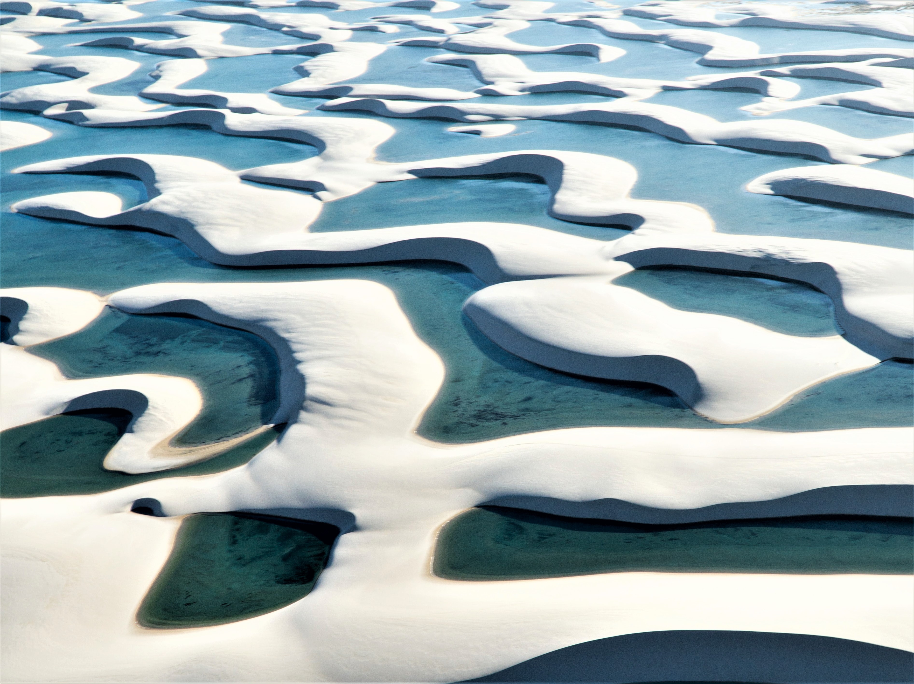
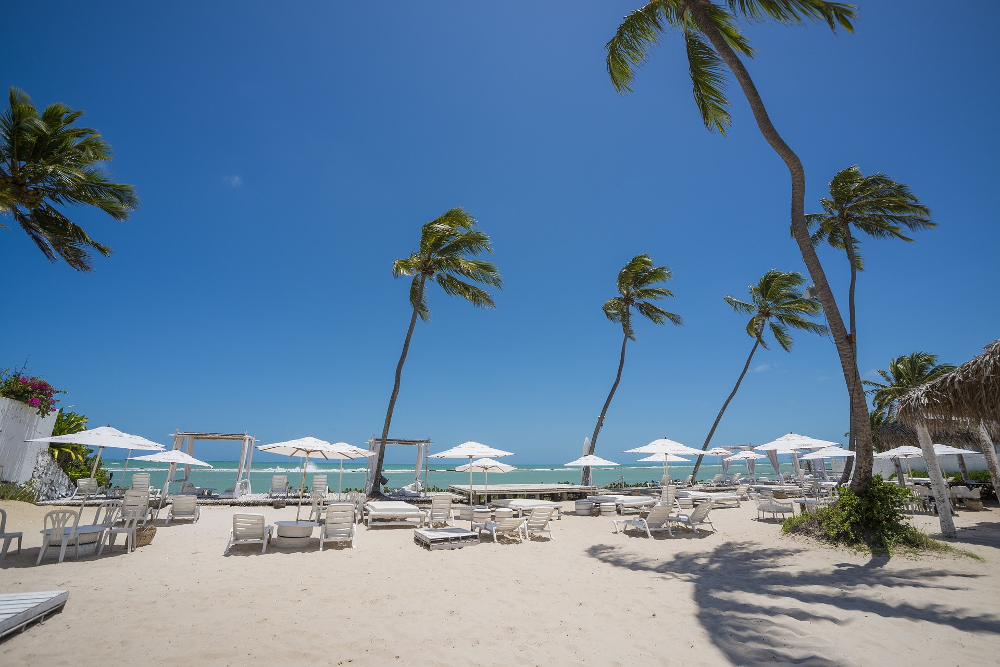
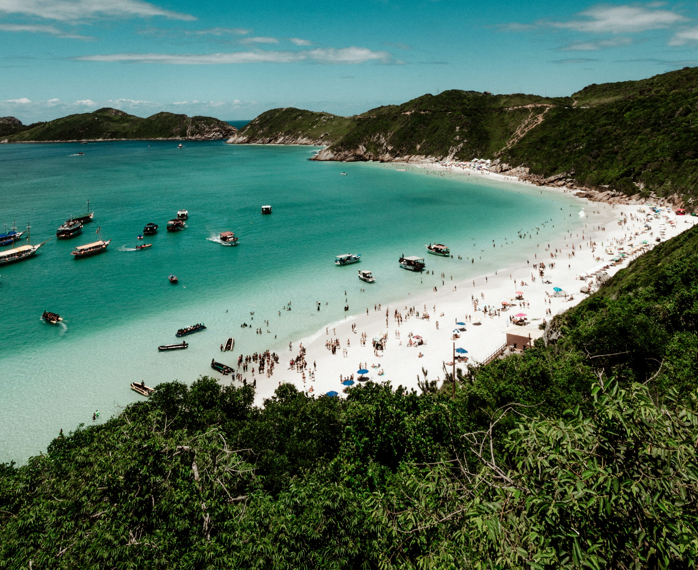
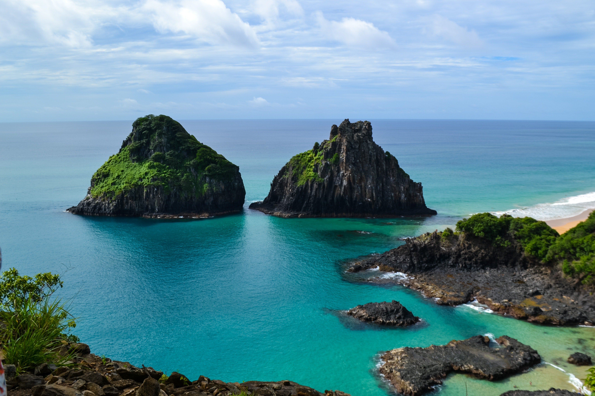

Florianopolis
Florianópolis on Santa Catarinan osavaltion pääkaupunki Etelä-Brasiliassa. Se koostuu yhdestä pääsaaresta, mantereella sijaitsevasta osasta, sekä ympäröivistä pikkusaarista. Florianopolis on yksi Brasilian turvallisimmista suurkaupungeista.
Lisää kuvia FlorianopoliksestaHinta 1200€
Lençóis Maranhenses
Suojeltu kansallispuisto, jonka rannikkoalueella on hiekkadyynejä sekä kosteikkoa lampineen ja laguuneineen
Lisää kuvia Lençóis MaranhensestaHinta 1300€
Jijoca de Jericoacoara

Pohjoisin kunta Brasilian Cearán osavaltiossa lähellä Cruzia kaupunkia. Se on tunnettu samannimisestä rannastaan ja kansallispuistosta.
Lisää kuvia Jijoca de JericoacoarastaHinta 1200€
Rio de Janeiro

Brasilian toiseksi suurin kaupunki. Se sijaitsee Atlantin valtameren rannalla samannimisessä osavaltiossa. Kaupungissa asuu 6,3 miljoonaa. Rio de Janeirossa syntynyttä brasilialaista kutsutaan nimellä carioca. Suomeksi kaupungin nimi tarkoittaa 'Tammikuun joki'.
Lisää kuvia BonitostaHinta 1100€
Maceio
Maceió on kaupunki Alagoasin osavaltiossa. Se on osavaltionsa pääkaupunki ja samalla suurin kaupunki. Kunnan asukasluku on hiukan alle miljoona asukasta. Meceió sijaitsee Mundaujärven ja Atlantin rannalla ja on suosittua matkailualuetta. Trooppisen ilmaston ansiosta alueen vuotuinen keskilämpötila on 25 °C ja sää on pääasiassa aurinkoinen
Lisää kuvia MaceiostaHinta 1500€
Porto de Galinhas
Porto de Galinhas on ranta Ipojucan kunnassa, Pernambucossa. Porto de Galinhas on kuuluisa kirkkaan veden rannoistaan ja luonnollisista uima-altaistaan. Se on osa Ipojucan kuntaa ja sijaitsee 60 kilometriä osavaltion pääkaupungista Recifestä etelään.
Lisää kuvia Porto de GalinhastaHinta 1400€
Fernando de Noronha
Fernando de Noronha on Brasilialle kuuluva 21 saaren saaristo Atlantin valtameressä, Rio Grande do Norten osavaltion edustalla. Koko saaristo on 26 neliökilometrin kokoinen. Vuonna 1988 suurin osa saaristosta julistettiin kansallispuistoksi alueen uhanalaisten eläinten ja kasvillisuuden suojelemiseksi. Saarta käytettiin vankilana 1700-luvulla, suurin osa alkuperäisestä kasvustosta tuhottiin,[4] jotta karkuun päässeet vangit olisi helpompi löytää. Fernando de Noronha on kansainvälisestikin kuuluisa sukeltamiseen hyvin soveltuvista lämpimistä vesistään. Suurin vedenalainen nähtävyys on 62 metrin syvyyteen 3. lokakuuta 1983 uponnut brasilialainen korvetti Ipiranga.
Lisää kuvia Fernandosta